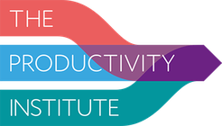

Jobs your residents can reach
Which jobs in your area are open to residents without a degree, pay above the local median and are growing, so employment and skills programmes get sharper sector targets, with the pay attached.
Dr. Mario Gruber, FRSA · Applied economist · London
Your Growth Plan, skills strategy, funding bid or any other economic work, with the detail to act on: which sectors to back, which jobs your residents can reach, and which programmes can get them there. Built from a uniquely in-depth, three-year analysis of 140 councils' economies: hundreds of official datasets, thousands of council documents and millions of business and property records.
Ask for the research on your area, and your team starts with much of the groundwork already done.

What the analysis shows
Each finding adds to a plan or programme you already run, and comes with the figures your team needs to test it.
Which jobs in your area are open to residents without a degree, pay above the local median and are growing, so employment and skills programmes get sharper sector targets, with the pay attached.
Which sectors are stronger here than across the region and still growing, and which neighbouring activities are the natural next step, so business support and your inward investment offer know exactly what to go after.
Which parts of your economy are likely to grow the business rates base: a budget question as much as a growth one, now that councils are keeping a larger share of the rates they raise.
Every finding names who to bring to the table, what to ask them and which programme it changes.
How it's built
I start from the official figures and rebuild each sector from company accounts, business-rates records and industry data, together with your council's own evidence base and documents. Recent investments, lettings, closures and planning decisions come from a running scan of local news and council papers. Where sources disagree, I check them against each other, and every figure is traceable to its source.
Until recently, doing this for a single council took weeks of manual work. With the data work automated, the days go into your area: interviews with your partners, interpretation, and a working session with your team.
Down to individual firms.
So what has worked elsewhere is easy to find.
The workings for any number, on one page.
What you can commission
Pick the piece that fits what's coming up. For pieces below your quote threshold, you can make a direct award through the Bloom Marketplace (NEPRO3 framework), where I'm an accredited supplier, or add me to your three quotes.
The evidence your Growth Plan rests on: which sectors, firms, places and jobs to back, set against your goals and the programmes you run. Includes interviews with your main partners and a working session with your team.
What has changed since adoption, which actions to keep, sharpen or add, and an action plan with partners, owners and indicators, lined up with your corporate plan.
The demand side for your employment and skills programmes: which jobs, where, at what pay, and the routes residents can take into them.
One sector or cluster in depth: its firms, supply chains, skills and space, and the activities with the most local potential. A good first piece when budgets are tight.
A small set of indicators for your Growth Plan, with baselines filled in, ready for the annual progress report and Cabinet.
After the groundwork, I keep the evidence current for a small annual fee, so the next refresh, funding bid or Cabinet question starts from evidence you already hold. Any question in between comes back from me within two working days.
Also on request: the economic case for funding bids and business cases, economic impact assessments, inward investment propositions, and Local Plan economic evidence as input to your lead planning consultant.
What it adds
The same evidence feeds the next refresh, funding bid and business case, so you don't pay for it twice.
Every figure is traceable, so when members push on a number, the answer is on one page.
Because the findings name sectors and places, each session with partners and employers ends with a concrete ask of each of them.
Extra analysis days when you need them, from someone who already knows your economy.
Your council is very likely among the 140
One page for your council: your goals in your own words and, under each, where the evidence adds most, with the sector, one figure and the programme it lands on. Free, and a quick way to judge whether a full piece of work would help.
Track record
He challenged us, and opened our eyes to new questions, possibilities and ideas for action.
“Mario worked with Lambeth to inform and shape the council's first Green Economy Growth Strategy from beginning to end. … I'd highly recommend working with Mario – he'll add real value and help bring success.”
He helped us to think about the potential for the Green Economy in Westminster and how we may better support businesses.
“Mario made himself available to answer our follow up questions and queries and regularly sought feedback to ensure he was meeting the brief.”
I have no hesitation in recommending Mario to anyone looking for his services.
“I found his research and analytical thinking to be very beneficial. The insight he provided me … has enabled me to view and think of new ways to increase impact.”
His expertise and dedication were instrumental.
On the sustainability and philanthropy work for MK Community Foundation.
About me
I advise cities, regions and their businesses on how to unlock their highest-value growth opportunities, by aligning sectors, firms and skills with investment and policy. When you commission me, the person on the first call is the person who does the analysis and writes the report.
Director. Work for Westminster City Council, Lambeth Council and MK Community Foundation, and a three-year analysis of 140 councils' economies.
Regional Lead for London and the South of England at the £32m national research institute: led the creation of its largest regional forum, bringing together leading firms, experts and local government, and co-authored its regional Productivity White Paper.
Research on how radical innovations spread through economic and policy systems, completed in minimum time with minimal corrections. Sole-authored paper in the Journal of Business Research, cited over 40 times. Before that, a First-class BSc (Manchester) and an MSc in Innovation Management (Alliance Manchester Business School).
Marketing Manager at a venture-backed London tech start-up: led a team of seven, wrote the growth strategy that reached over 300 million people, won 30+ partners including Airbus and Siemens, and helped shape the investment strategy behind c. £18m raised.
Beyond councils
For businesses, developers and investors: local talent, suppliers, sites and infrastructure, what the council prioritises, and what support or resistance to expect.
The case that earns local backing and holds up in planning: jobs, supply chains and social value traced to real firms.
For research and policy teams: multi-step AI workflows that gather evidence, read documents at scale and draft analysis to a set standard, with a person reviewing every output and every figure traceable.
Briefings, challenge sessions and peer review on local economies, productivity and AI in the public sector.
How it works
What's coming up (a plan, a refresh, a bid), the deadline, and what the evidence has to stand up to.
Scope, fixed price, dates and the route to commission, as a written quote within 48 hours.
A first draft early enough to change course, and evidence you can keep using.
Questions councils ask
Official local figures are often estimated from regional or national data and grouped into broad sectors, which leaves councils to work out what they mean for their own area. I add that local detail: each sector is rebuilt from the businesses actually trading locally, where the work is really done rather than where firms are registered, and how much value stays in the area. Across 162 detailed sectors, output per job differs from the official local figure by 31% on average. That detail links the evidence to jobs, skills, land and business rates. Your own evidence base is part of it: if your council is among the 140, I've already been through your economic needs assessment or employment land review, and every figure is traceable.
The data work is automated, so the days go into your area: interviews, interpretation and a working session with your team. Fixed scope in writing, and insurance set to your contract's requirements.
I lead every commission myself, from the first call to the final report, with research and engagement support from my team where the work needs it. That keeps it short, fixed and accountable.
Then I can be the data layer and the extra analysis days, and your team writes it.
Yes. If you hold a Beauhurst, Experian or Oxford Economics run, I'll fold it in and show where the existing figures and my analysis complement each other.
I use automated tools for the data processing. The analysis and the writing are mine: every figure is checked by me and traceable to its source.
For pieces below your quote threshold, you can make a direct award through the Bloom Marketplace (NEPRO3 framework) or add me to your three quotes. Larger pieces go through your usual procurement. Either way, you get a one-page proposal with scope, fixed price and dates.
A Growth Plan, a refresh, a funding bid or a skills strategy: write to me directly, usually with a reply the same working day, or call +44 7512 370761. And if you need quotes for evidence or strategy work, I'd be glad to be one of them.